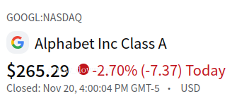

UBUNTU KYLIN 24.04.5 LTS / AMD64
AgentLinux
Start a task on your desktop. Pick it up in WeChat.
 Chinese XP-style desktop booted via UEFI in QEMU
Chinese XP-style desktop booted via UEFI in QEMUThe desktop agent on real hardware
Captured on an x86-64 laptop running AgentLinux. The agent in this session supplied the tool calls. The desktop assistant requested confirmation and executed each step.

Inspect the OS and launch an app
The assistant reads the kernel version and architecture, then requests permission to open MATE Calculator by its desktop ID.

Find and press a button
The assistant inspects the calculator’s accessible controls. The dialog shows the proposed press of the 6 button.

Read the result in Calculator
After the agent activates 6, multiply, 7 and equals, the calculator displays 42.
From a web quote to a ZenOffice spreadsheet
On the same laptop, an external agent looked up Alphabet Class A (NASDAQ: GOOGL), extracted public market data, created an XLSX workbook and opened it in ZenOffice.

Browser detail: Google Finance shows a closing price of $265.29 on November 20, 2026, down 2.70% from the previous close. ZenOffice on the laptop: five sessions from November 16–20, with open, high, low, close, daily change, volume and a link to the historical data.
ZenOffice on the laptop: five sessions from November 16–20, with open, high, low, close, daily change, volume and a link to the historical data.Download the demo workbook (.xlsx) · Stock Analysis · Google Finance
Control Panel preview

From desktop to phone
ZenCode 3.14.45
Follow a task, approve actions and enable native desktop observation and clicks in one workspace.
Multi-step desktop actions
Find and open apps, switch windows, operate named accessible controls, and inspect connections, disk space and failed services. Review each action before it runs.
WeChat continuity
Pair your phone and authorize a workspace to continue a conversation, answer approval requests and receive files.
Models and networking
Use ZenMux or configure a compatible endpoint, key and model.
Chinese input and typography
Fcitx 5 Pinyin and Noto CJK fonts support Chinese across web pages, desktop editors and monospaced terminals.
Obscura Firefox 0.3.11
The default browser disables WebRTC.
CLAUDE CAGE / 0.2.0-rc
Claude Cage isolated terminal
Press Ctrl + Alt + T or open Terminal from the applications menu. On first use, install Claude Cage 0.2.0-rc, create a local Cage account, save the recovery key and complete setup in the Cage workbench. Start the guest, then open a terminal to connect. Open Host Terminal from the applications menu for an independent host shell. Each Cage window has its own shell in the same persistent guest. A local guest requires Intel VT-x or AMD-V and user access to KVM. On Apple Silicon under x86 emulation, connect to a remote Cage environment.
Choose where to run AgentLinux
Try the Live desktop
The LiveCD signs in automatically. If prompted, enter agentlinux as the username, leave the password blank and press Enter. The preinstalled SanDisk USB drive uses the default username agent and password agentfudan. If you install AgentLinux yourself, sign in with the credentials you set during installation.
Write the ISO to a spare USB drive. This erases that drive. Select it in the computer’s boot menu to try the desktop. An ordinary Live session discards changes at shutdown.
Install on an internal drive
Open Install Ubuntu Kylin on the Live desktop. Check the destination by model and capacity, review the partition changes, then install. Remove the installer USB when prompted to restart.
Carry your system on USB
Boot the installer and select a second USB drive for a full installation. Boot that drive to keep your files, input history and app settings across sessions. A separately configured dual-mode drive can also offer a Live installer entry.
Keep working with the lid closed
By default, closing the lid turns off the built-in display and keeps the laptop awake on AC or battery power. Running agent tasks continue, and you can keep using SSH while the laptop is connected to the network.
2026.11.25.2 / 8.17 GiB
Download and boot
Fixes a battery tray crash at shutdown that triggered an error report on the next login. Right-click the network icon to choose Wi-Fi on small screens. The live desktop includes a disk installer shortcut.
ZenCode opens from the applications menu on demand. Includes MyIME, WeChat for Linux, ZenOffice and GParted. Open Properties on a connected Wi-Fi network to view its IPv4, IPv6, gateway and DNS. Installation and standalone boot from a virtual hard disk were verified. Download the complete ISO and its checksum from Hugging Face. Allow at least 9 GB of free space.
shasum -a 256 -c AgentLinux-24.04.5-desktop-amd64.iso.sha256
For Intel and AMD x86-64, with BIOS and UEFI boot. Apple Silicon can run it under QEMU emulation; ARM VirtualBox cannot boot this image. An ordinary live session discards settings on shutdown.
On an Intel laptop, the Live desktop booted and the installer reached file copying. Standalone boot from an installed hard disk was verified in a virtual machine.